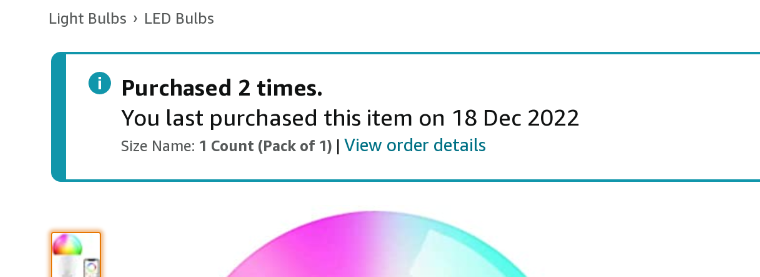
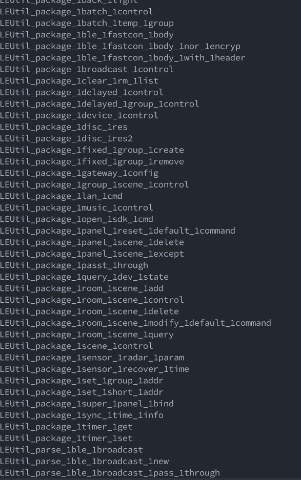
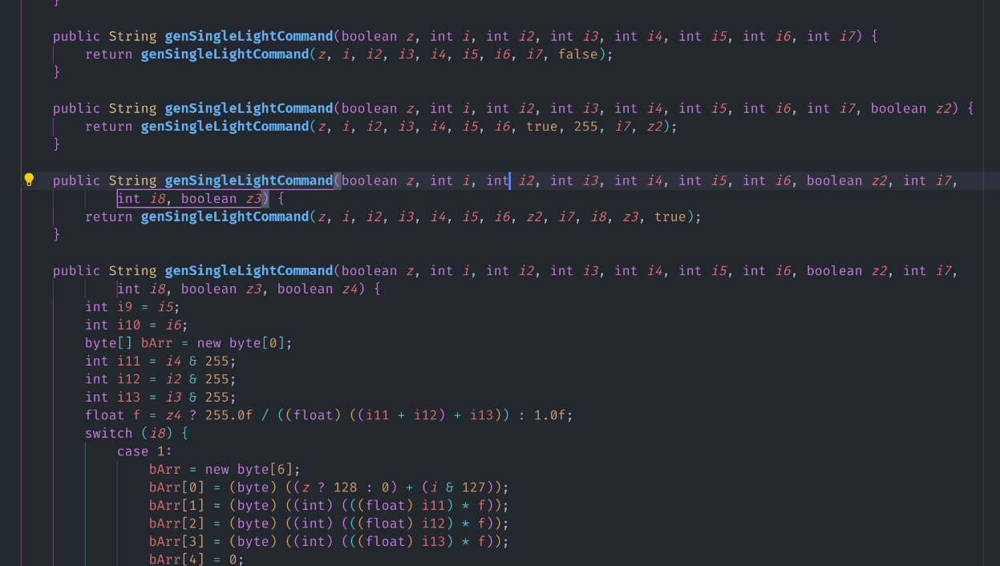
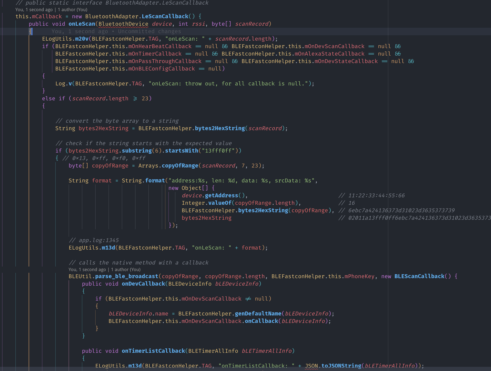
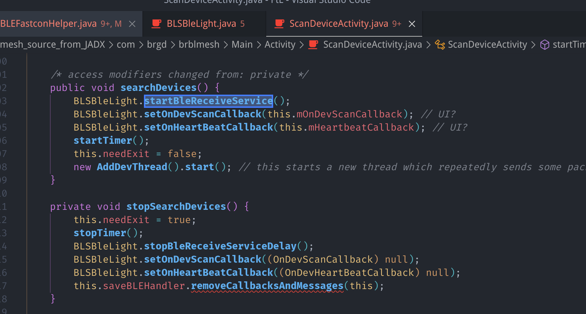
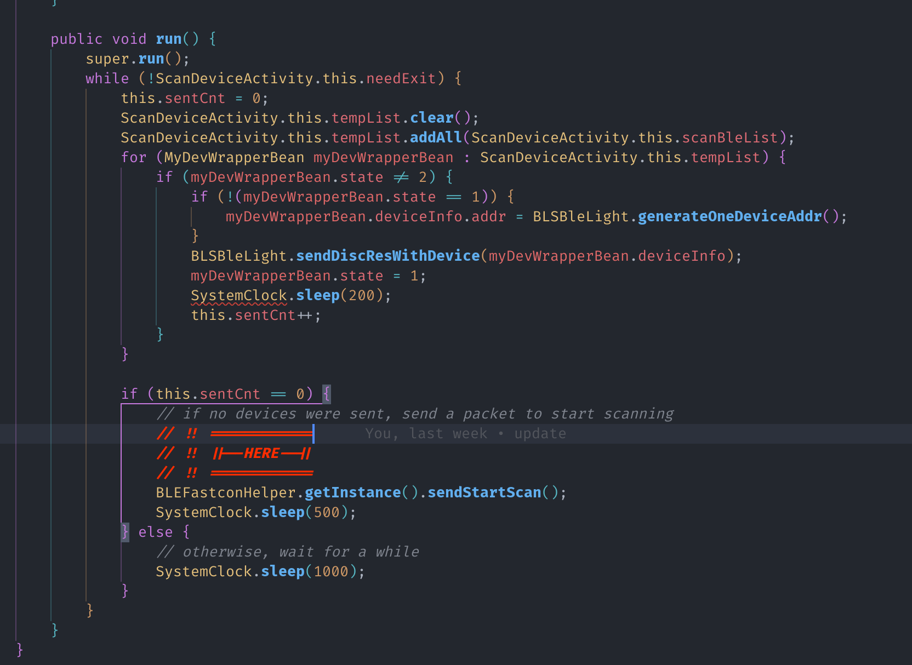
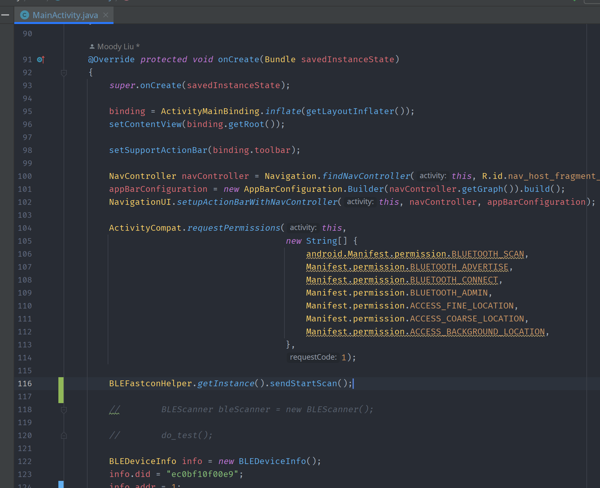
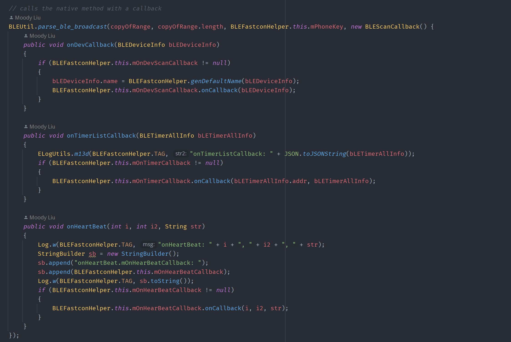
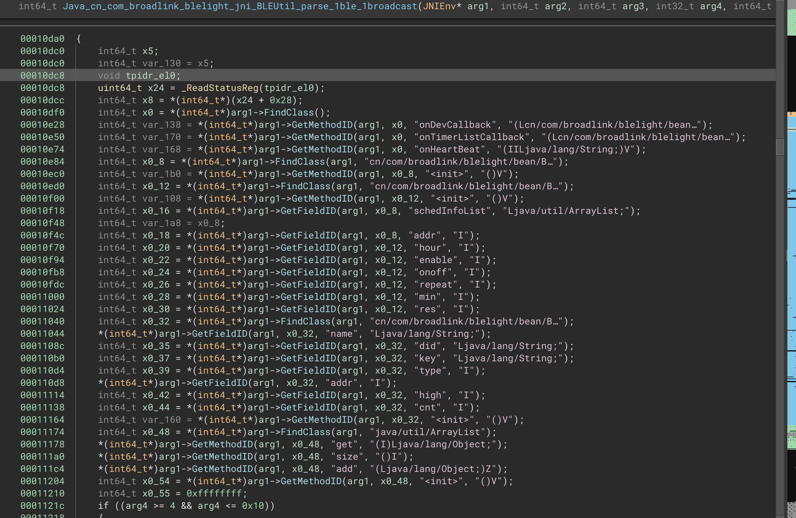
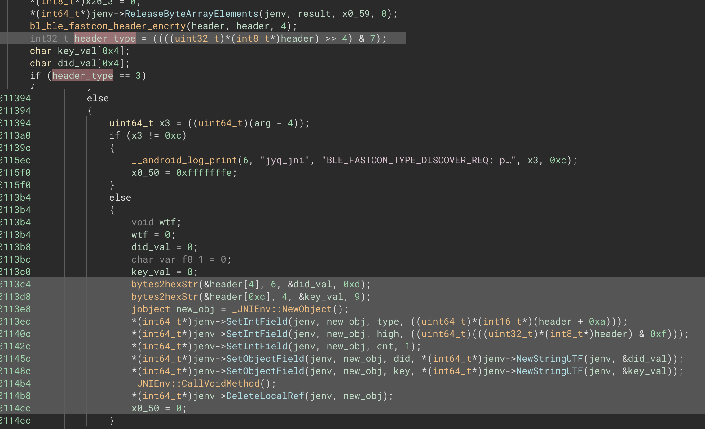

本文内容不得用于商业用途
前情提要 链接到标题
MoodyAPI 里面有一个组件 LightController
TlDr：控制一个 BLE 灯泡。
可惜的是，之前那只灯泡坏了（都是去年的事了）。鄙人只好又在 Amazon 上重新
买了另一只同样的：

去年 12 月 18 买的，没两天就收到了。收到灯泡之后整个人就傻掉了。
同一款灯泡，为什么通信协议完全不一样了呢？
上次的灯泡使用的是蓝牙 BLE GATT 协议，其暴露了两个 Service 用于控制颜色，亮度等参数。
但这次的灯泡完全不一样，甚至连用于控制的 App 都无法通用。
查询了各大论坛，也发现这种新型 Fastcon 协议并没有开源实现
那么，是退货，还是逆向这个闭源协议呢？
你猜？ 链接到标题
当然是逆向了1. 获取 APK 链接到标题
这第一步自然是相当容易，有什么好说的
2. 反编译 Java 类 链接到标题
这一步也很简单，甚至随便找了个 online 的 decompiler 就 拿到（部分）源码了。
3. 源码分析 链接到标题
在解包 APK 的时候，我意外发现了一个 native 库，libbroadlink_ble.so。
看到 JNI，我的脑子就开始发毛，这不是要逆向 C/C++ 代码了吗？（悲）
3.1 Java 类 链接到标题
程序里有数个名称带有 Fastcon 的类，其中 BLEFastconHelper 似乎是最重要的一个，包含所有
Fastcon 设备无关的逻辑，BLSBleLight 似乎是专门用于智能灯泡的封装类。
另外，程序内还有一个 cn.com.broadlink.blelight.jni.BLEUtil 类，里面全都是 native 方法
的声明。
3.2 libbroadlink_ble.so
链接到标题
一个神秘 native 库，看了看里面有 47 个 JNI 函数，多数都是用于数据的打包：

4. 开始分析 BLEFastconHelper 的扫描设备逻辑
链接到标题
这个长达两千多行的类里面的函数名倒是很 self-explanatory，但其中函数的参数名则是一团乱麻。

4.1 如何扫描设备 链接到标题
BLEFastconHelper 里面有一个 startScanBLEDevices 函数，用于（开始）扫描设备。
|
|
没啥用，但 bluetoothAdapter.startLeScan 就直接进入 Android 的蓝牙 API 了，所以
查看一下 this.mCallback 的值。

上面代码是分析过后，包含了合理变量名和注释的版本，可以看到在 mCallback 内比较了蓝牙 Advertising
数据的长度和第 7-11 个字节（13fff0ff），如果相等则进行下一步处理。
那么我能不能在电脑上也进行这样的扫描，并直接获取到这些数据呢？
A Million Years Later
答案是不行。在电脑，树莓派以及手机的某些 BLE Scanner 上都无法扫描到这个设备。
4.2 “Scan Request” 链接到标题
在这种情况下，扫描器会主动向设备发送一个请求，然后设备才会返回数据。
我需要看看在调用 startLeScan 之前，扫描器是否有发送过这样的请求。
果不其然，在 ScanDeviceActivity 中发现了玄机：

在这个函数的最后，他启动了一个 AddDevThread 线程，在后者的 run 函数中，扫描器会
向设备发送一个 Scan Request：

其中：
|
|
🤡 -1, false, false, false, 0 🤡
函数层层调用，一团乱麻般的参数，最终会被传递到 doSendCommand 函数中：
|
|
doSendCommand 函数再次调用 getPayloadWithInnerRetry 函数，这个函数进而调用了
native 方法 package_ble_fastcon_body，返回的数据被传递到一个名叫 sHandler
的 Handler 中。
sHandler 获取到数据后，调用另一个函数签名的 doSendCommand 函数，在这里我将其重命名为
XdoSendCommand，在这个函数中，数据包被再次传递到 native 库函数 get_rf_payload，
并最终使用 bluetoothLeAdvertiser2.startAdvertising 被发送出去。
4.3 “Scan Response” 链接到标题
只有理论分析当然不够，我还需要进行真正的测试。
于是把代码 Ctrl+C/Ctrl+V 到了一个新的 Android 项目中，然后改改改改改改改改改改改改改改改改改改一些 编译错误，终于可以运行了。

我在 MainActivity 手动添加了一个 BLEFastconHelper.getInstance().sendStartScan(); 调用，
然后运行程序，果然在电脑上收到了设备发来的响应：
Manufacturer data: {65520: [
78, 109, 122, 172, 236, 11, 241, 15,
0, 233, 161, 168, 94, 54, 123, 196
]}
因此推测，Fastcon 设备对应的 Manufacturer ID 是 0xfff0，所以上文中的 13fff0ff 应该是
0x13 + 0xfff0。
那么回到 mCallback 函数中，我们可以看到，如果扫描到的设备的 Manufacturer ID 与 0xfff0 相等，
则会继续调用 BLEUtil.parse_ble_broadcast 这个 native 方法：

可以看到，这个函数接受一个 copyOfRange 数组，它的长度，一个 mPhoneKey 和一个巨大的
BLEScanCallback 类实例。
实例中使用三个不同函数来处理不同的数据包类型：
onDevCallback：看起来是我们需要的Scan ResponseonTimerListCallback：这个智能灯泡支持定时功能，这个函数应该是用来处理定时数据包的onHeartBeat：不太清楚这个是什么。有一段时间，我的灯完全停止响应，但只有在那时我才能收到 大量的心跳包，其他正常时间我收不到。
4.4 进入 native 函数 parse_ble_broadcast
链接到标题
在 Binary Ninja 中打开这个 so，并使用 JNI 插件分析 JNI 所需的第一个和第二个参数（jEnv 和 obj）：
首先是一大堆 FindClass 和 GetFieldID：

随后进行了 Header 的 “解密”：
bl_ble_fastcon_header_encrty是不是拼错了呢？
再之后进行 header 的解析，包括检查一些可能的 type，并最终进入到我们关注的分支，创建新对象并进行赋值：

最终调用 _JNIEnv::CallVoidMethod 并将对象传递给 onDevCallback 函数。
4.5 回到 Java 代码 链接到标题
|
|
没啥好说的，如果 mOnDevScanCallback 存在，就调用它的 onCallback 函数。
做到这里，我已经能在理论上发送 Scan Request 并接收到 Scan Response 了，接下来需要
的就是将其使用 C 或 Rust 重写实现。
4.6 重写 Parse BLE Broadcast 和 Send Start Scan
链接到标题
以上内容其实在一月份就理解了，但是我一直没有动手实现，因为在写 MOS。
而接下来的内容几乎花了我整整一周的时间，因为内容涉及到 ARM64 汇编以及 native 调试，并且还 顺便学了一些 Rust。
所以下一篇再写。